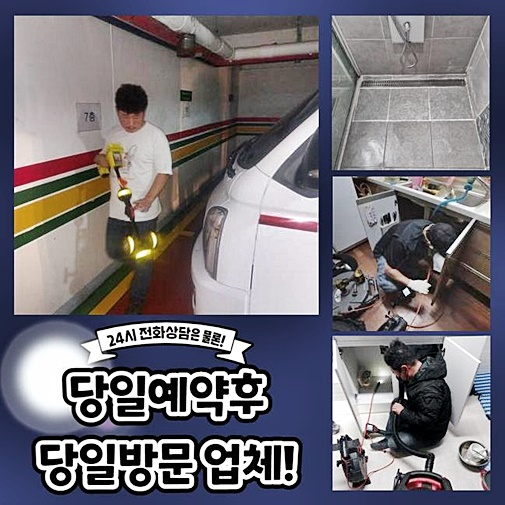
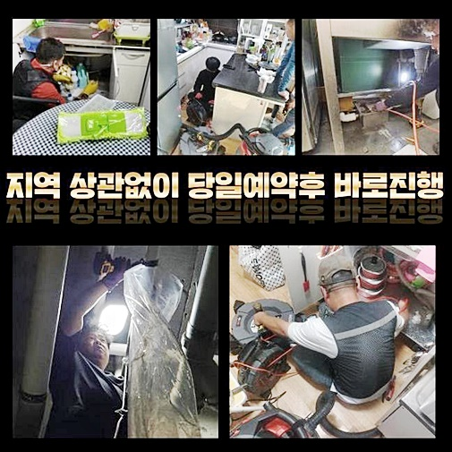
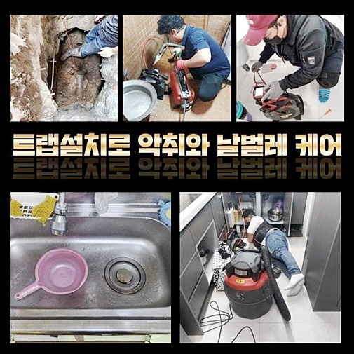
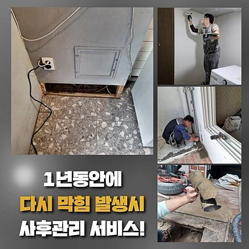
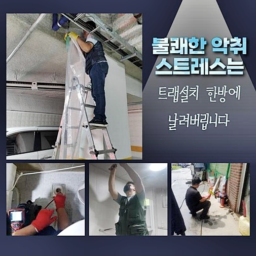
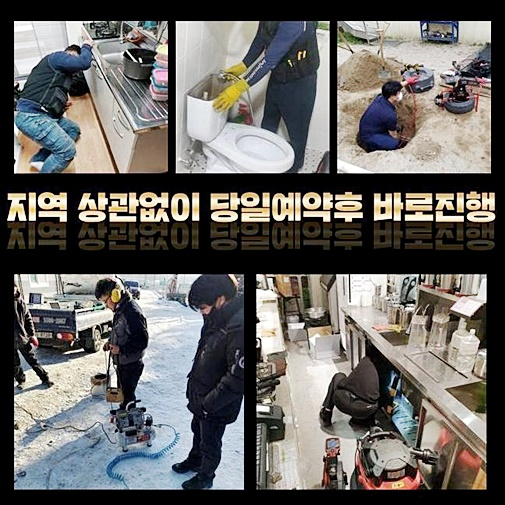
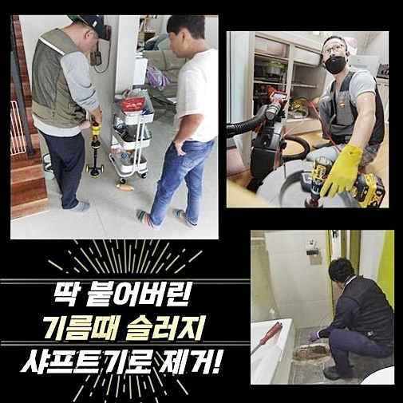

🏠 종로 예지동대변기막힘 종로6가 집수정청소 배관막힘누수업체
용인 지동 변기막힘 전문 시공 후기

📋 작업 개요
- 위치: 용인 지동, 지동, 용인
- 서비스 유형: 변기막힘, 하수구막힘, 배관막힘, 집수정막힘, 누수수리, 역류해결, 뚫는업체, 배관청소, 고압세척, 설비공사, 악취차단
- 작업 일시: 2024. 9. 28. 10:40
- 업체명: 하수구수사대 (010-5615-2118)
🔍 문제 상황
종로 예지동대변기막힘 종로6가 집수정청소 배관막힘누수업체
여러 명들이 같이 옹기종기 모여있다면 생각치도 못한 일로 인해 하수의 흐름이 끊어집니다
오늘 알려드릴 장소는 어느 다가구 주택이었습니다 건물의 제일 밑층에서 하수구가 비정상으로 가동돼서 고충이 이만저만이 아닌 모습으로 보였습니다
하수가 이동되지 못하거나 역류가 빚어진다면 제일 밑 세대에서 문제가 터질 수 있어요
하수구가 여러 차례 망가지는 이유를 추론해 보자면 배수관이 탑재하고 있는 모양으로 인한 것입니다
생활용수를 급수하고 폐수하는 공정을 문제 없이 전달되도록 하려면 모든 세대 배관들과 중앙 배관이 하나의 라인으로 이어집니다
대부분의 배관 수로들은 연결감을 갖고 있으므로 일부 구간이 오염되어 정상적인 배출이 중단되고 이상 증세가 형성되는 상황 속에서는 비단 한 군데에서만 오류가 외관상 보이지 않고 두 곳 이상의 세대에서 일제히 동일한 큰 문제가 되어버리기도 해요
거꾸로 범람하는 현상 외에도 까다로운 일들을 만들어내는 배관으로 인해 건물의 가장 하단부에서 피해를 가장 막대하게 다뤄야하는 상황에 놓인 것이죠!
세대의 연락을 받고서 관리인 직원분이 배관이 고장난 듯 하니 와달라고 전화를 해준신 상황이었죠
물 빠짐이 제대로 수행되지 않았기 때문에 다른 집까지 고충이 전달되고 있는 모습으로 보였습니다
전화로 전달을 받은 내용을 분석해서 대략적으로 짐작을 해보았고 도구나 기기를 빠짐없이 챙기고 고객님께로 달려갔습니다

🔎 원인 분석
💡 전문가 진단: 정밀 진단 장비를 사용하여 슬러지의 고착 여부를 판명하고 타격/세척 작업을 실시했습니다.
하수구가 막혀버리는 것은 낮과 밤을 가리지 않고 아무리 유지관리를 잘 해왔더라도 부딪힐 수 있는 일이죠
딱히 말썽이 없더라도 하수구에 대한 사안들에 경각심을 가지고 오류의 기미가 보이면 빠르게 대응할 수 있는 필요한 정보를 확보해 두는 것이 이상적인 태도입니다
여러 누적된 케이스를 고쳐오며 어려운 상황이라고 해도 정확하게 상황을 진단하고 철두철미하게 보완해드리니 언제든 접수를 하시면 되겠습니다
작업지에 도착하고 나면 최우선적인 순위로 두는 작업은 문제의 본질이 무엇인지 판단해야 옳습니다
사안에 대해 대략적으로 들었지만 전문적인 눈으로 봤을 때 잘못됐다 싶은 점들은 다양한 의미로 이해될 수 있으니 미리 점검 절차를 거쳐야 해요
일단 압력을 가하고 보는 것보다 속사정을 속속들이 알아야 업무에 대한 완결도가 증폭될 수 있어요
난리통을 방불케 하는 작업지를 바라보면서 건물에서 나타나는 증상들을 속 시원하게 타파할 수 있을만한 솔루션이 없나 연구합니다
탐사장치를 활용해서 중앙 배관을 확인하면서 문제를 낳은 뿌리를 발굴해 나갔습니다
정말 다량의 물이 매끄럽게 배출되지 못했던 것은 바로 기름 슬러지 고형물이 떡 하니 장애물처럼 막고 있었죠
그렇기에 집안에서 물을 약간만 강하게 틀어도 겉으로 치솟으면서 주요 관로와 가장 인근에 있다고 할 수 있는 가장 아래의 층수에서 오염된 물이 튀어나오는 사건이 첫 주자로 생긴 겁니다
긴 세월동안 수많은 종류의 막힘건을 수선해 드렸던 시간들이 밑거름이 됐기에 이러한 탄탄한 역량을 통해서 화를 불러온 지점과 해결책을 도출해낼 최상의 방안을 계획에 넣을 수 있어요
건물에 설치된 하수로로 물을 폐기하는 중에 여러 오염물이 섞여 들어갑니다

🔧 작업 과정
이런 잡다한 물질들이 축적되면서 하수관의 이상을 불렀다고 짐작할 수 있었습니다
막힌 통로를 뚫어내는 작업으로 기본적인 사유를 없애버리는 것이 중대한 과제였습니다
이처럼 사유를 명확하게 확인하는 단계가 최우선적인 과제이므로 배관용 카메라를 주입하여 내면 상태를 분석하는 검사를 우선적으로 수행했습니다
많은 고객님들이 내시경은 의사분들이 쓰시는 생각하시는 경우가 많은데 배수로의 전용으로 시장에 나온 기기랍니다
배관은 매우 좁다랗기 때문에 사람의 시력만으로는 입구를 넘어선 위치까지는 알아차리기가 까다로운 구조를 갖고 있어서 하수관의 내부 상황을 실시간으로 중개하는 도구의 힘을 빌려야 합니다
설비에 맞춰서 나온 기기의 유용성은 약화됐을지 모를 하수구의 상처입히지 않는 선에서 저자극성으로 문제를 풀어갈 수 있게 돕기 때문이죠
꼼꼼하지 않은 태도나 장치의 활용은 하수구에 오히려 타격을 가해버려서 배수 장치의 토탈 교체라는 공사를 부를 수 있어요
노폐물들의 주된 구성물들과 외형과 규모를 모두 알아냈다면 작업 노선을 정하는 데에 든든한 배경이 될 수 있습니다
전문가를 물색하고 계신다면 여러가지 현장을 다뤄온 경험을 보유한데다 구체적으로 수행할 때 필요한 장치 보유 여부를 간략하게나마 훑어보신 이후에 선정하시면 결과물이 좋을 겁니다
단독주택은 배수관이 일정하게 장착되어 있지 않으며 구성하는 파이프의 재질부터가 다르고 여러 문제가 합쳐진 혼합형도 있어요
그렇기 때문에 내부 탐사 과정을 임할 때는 여러 섹션을 확인을 하고 한 곳에 문제가 보인다고 해도 주변부까지 눈을 돌려서 접합되어 있는 작은 배관까지도 동시에 확인해줘야 해요
고장난 위치들을 모조리 판별했다면 그 좌표를 목적으로 어떠한 도구의 지원을 받아서 해당 부위를 세정할 것인지 노선을 잡아야 합니다
뚫음 업무를 하기 위해 투입되는 기계는 종류가 많지만 합리적인 수단을 골라야만 고질적인 장애물을 속 시원하게 풀어버릴 수 있게 됩니다
이런 검토를 거쳐서 문제가 가장 부각되는 위치의 오염물을 제거하는 목적으로 물줄기를 통해 씻어내리는 업무를 해나갔습니다
노폐물이 켜켜이 쌓인 파트가 간혹 보인다면 회전력이 제대로인 샤프트를 넣어서 파편화를 시켜서 없앱니다
이 기계는 내부에 화석처럼 굳어진 덩어리를 작은 입자로 쪼개고 걷어서 빼내는 방식처럼 철저하게 세정을 돕습니다
이렇게 이물을 제거한 후 고압세척 단계를 거쳐 배관 내부의 환경을 제대로 닦아내 줍니다
이물을 남김없이 탈락시켜야 향후 하수구 속에 새로운 슬러지가 다시 탄생하지 않을 조건이 되는 겁니다


✅ 작업 완료
진공으로 흡입하는 석션기로 유연하게 풀어진 오염물들을 잔량이 전혀 남지 않도록 빼내 주었습니다
만에 하나 남은 조각으로 인해 다시 차단되어 버리는 사고는 용납할 수 없는 만큼 중간 점검을 위한 카메라를 배치해서 잔량이 없게 주의깊게 검토했죠
메인관로는 작은 배관들의 이물이 모여드는 곳이기에 주기적으로 청소를 해야하죠
노폐물을 정례적으로 제거하여 때때로 청소도 해준다면 설비적인 곤란함 없이 정상적인 하수시스템을 유지할 수 있습니다
하수관이 소통되지 못해서 자주 스트레스를 받으신다면 늦은 시간이라도 상관이 없으니 상담을 요청해 주세요




⚠️ 베란다 누수 및 방수 관리 방법
- ✅ 비가 많이 올 때 창틀 주변이나 아래층 천장에 얼룩이 생기는지 정기적으로 확인해 보세요.
- ✅ 우수관 주변 실리콘 마감이 들뜨거나 깨진 틈새가 있는지 손상 여부를 수시로 체크하세요.
- ✅ 베란다 바닥 타일의 줄눈(메지)이 소실되면 그 틈으로 물이 침투하여 누수가 유발됩니다.
- ✅ 누수 의심 증상 발견 시 방치하면 아래층 손실이 커지므로 즉시 전문가의 진단을 받으십시오.
💡 핵심 정리
- 확실한 장비 작업(내시경 점검 및 샤프트 스케일링)으로 원인을 뿌리 뽑습니다.
- 작업 후 1년 이내에 동일한 부위 재발 시 100% 무상 A/S 서비스를 보장합니다.
- 서울 · 경기 · 인천 전 지역에 24시간 언제든 긴급 출동할 수 있도록 항시 대기 중입니다.
❓ 자주 묻는 질문 (FAQ)
🚨 용인 지동 변기막힘 문제로 고민이신가요?
정확한 원인 진단과 확실한 시공으로 재발 없는 해결을 약속드립니다.
24시간 긴급 출동 | 서울 · 경기 · 인천 전지역 | 1년 내 재발 시 무상 A/S